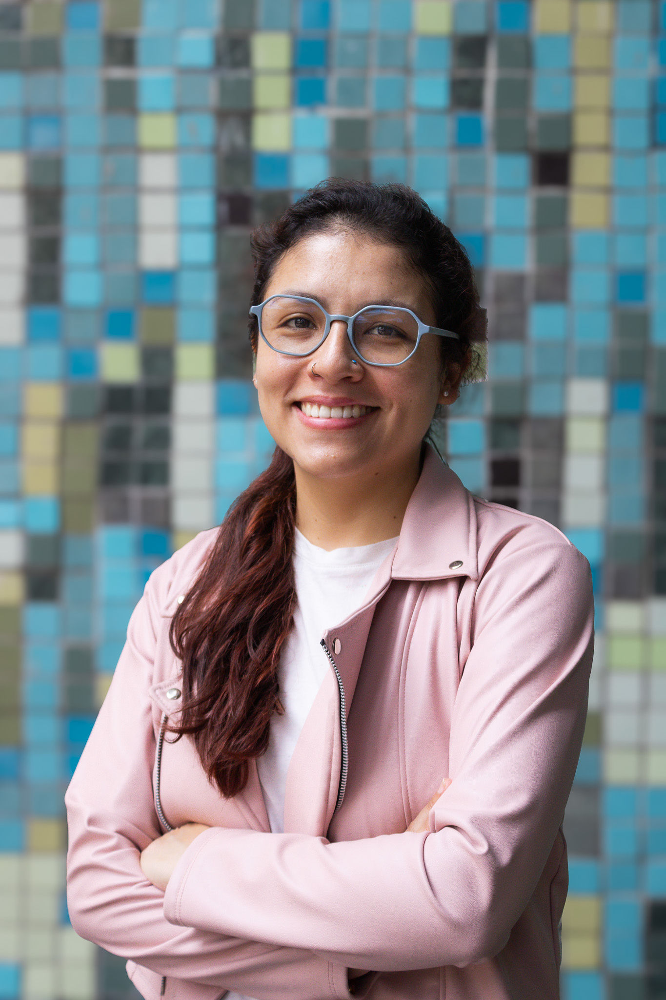

Paola Larrauri
Líder de Equipo
LinkedIn ↗Investigadora en biología molecular y celular e inmunología, con experiencia en transferencia tecnológica, educación STEM y comunicación científica en Chile y Perú. Su investigación doctoral incluyó el desarrollo y despliegue de herramientas científicas abiertas para monitorear patógenos ambientales en zonas remotas, facilitando la transferencia de estas herramientas al ámbito biológico y la participación de quienes las usan.